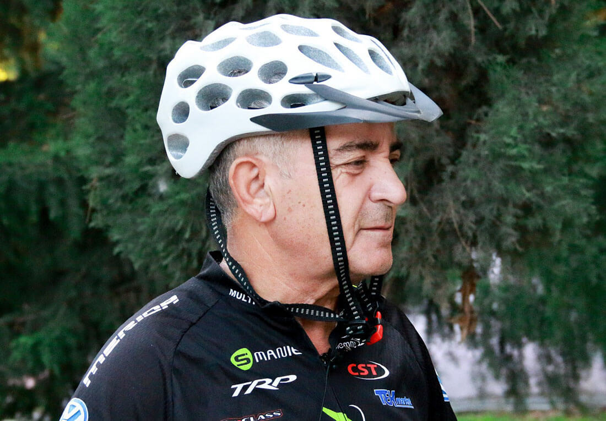

Ξεχάστε όλα όσα γνωρίζατε για τους χονδροπροστατοτές. Αυτό το φάρμακο είναι αποτελεσματικό ακόμη και στα πιο προχωρημένα στάδια της ασθένειας.
Είναι αποδεδειγμένο ότι οι καταπονημένες αρθρώσεις οδηγούν με μαθηματική ακρίβεια σε αναπηρική καρέκλα και μια μη πλήρη ζωή. Όμως οι ιστορίες αυτών που έχουν θεραπευτεί σε κάνουν να πιστεύεις ότι δεν πρέπει να απελπίζεσαι ούτε στις πιο δύσκολες περιπτώσεις
Εδώ είναι ένα παράδειγμα: Ο Μιχάλης Δερπανόπουλος είναι ένας γνωστός ποδηλάτης με πολλούς τίτλους στην καριέρα του. Είναι 62 ετών και γνωρίζει για την αρθρίτιδα από πρώτο χέρι. Όμως χάρη σε ένα σύγχρονο, αποτελεσματικό και όχι ακριβό μέσο κατάφερε να επιστρέψει στην κανονική και πλήρη ζωή
Για αυτό ακριβώς μίλησε ο κύριος Μιχάλης στον ανταποκριτή μας.
 Μιχάλης ΔερπανόπουλοςΑνταποκριτής: Πώς εξελισσόταν η αποκατάστασή σας μετά από την ασθένεια και πώς μπήκε στην ζωή σας η ποδηλασία;
Μιχάλης Δερπανόπουλος: Ξεκίνησα από τα απλά: πρωινές ασκήσεις και τζόγκινγκ. Τα παιδιά μου μου χάρισαν ένα στατικό ποδήλατο, ήμουν αναγκασμένος να το αφομοιώσω. Σε κάποια στιγμή είπα στον εαυτό μου γιατί κάθθεσαι μέσα στους 4 τοίχους και πατάς τα πηδάλια; Αγόρασα τότε ένα συνηθισμένο ποδήλατο, το οποίο έχει γίνει το βασικό μέσο μεταφοράς μου.
Μετά άκουσα από κάπου για τον ποδηλατικό μαραθώνιο για αυτούς που έχουν ξεπεράσει τα... Είπα στον εαυτό: «Γιατί; Καλύτεροι είναι οι άλλοι;» Και στην πρώτη κιόλας κούρσα της ζωής μου ανέβηκα στο βάθρο. Ήταν απροσδόκητο, αλλά συνάμα μου έδωσε κίνητρο. Αν δεν ήταν η νίκη αυτή, η συμμετοχή στον μαραθώνιο θα ήταν πιθανώς ένα απλό επεισόδιο.
Ανταποκριτής: Πόσο καιρό υποφέρετε από την αρθρίτιδα;
Μιχάλης : Η αρθρίτιδα αποτελούσε άλυτο πρόβλημα για μένα εδώ και περισσότερα από δέκα χρόνια. Οι πόνοι ήταν σταδιακοί, στρεβλωτικοί. Φοβόμουν να κουνηθώ χωρίς παυσίπονα. Η αρθρίτιδα είναι μια ασθένεια που ποτέ δεν σου επιτρέπει να επαναπαυτείς. Μόνο όσοι γνωρίζουν για αυτήν από πρώτο χέρι θα με καταλάβουν. Άκουγα όλες τις συμβουλές, μερικές φορές ακόμη και τις πιο παράλογες. Τώρα το σκέφτομαι και γελάω, αλλά πριν από τέσσερα χρόνια προσπάθησα να την αντιμετωπίσω ακόμη και με κοπριά. Εξωτερική χρήση, ευτυχώς
Ναι, μερικές φορές ο σωματικός πόνος επηρεάζει την ορθή σκέψη.
Ανταποκριτής: Πώς τελικά καταφέρατε να θεραπεύσετε την αρθρίτιδα;
Μιχάλης: Το κυριολεκτικά με έσωσε. Όταν ξεκίνησα την θεραπεία με αυτό το φάρμακο, προετοίμαζα τον εαυτό μου για το χειρότερο, αλλά δεν έχανα την πίστη μου για το καλύτερο.

Και το «θαύμα» συνέβη: μια εβδομάδα μετά την έναρξη της θεραπείας, αισθάνθηκα ότι νιώθω καλύτερα. Δεν το πήρα στα σοβαρά, γιατί πάντα είμαι επιφυλακτικός. Πίστεψα ότι απλά είχε περάσει η οξεία περίοδος και η ανακούφιση ήταν προσωρινή Αλλά έχουν περάσει ακόμα δυο εβδομάδες και νιώθω όλο και καλύτερα
Έχοντας ολοκληρώσει τον κύκλο της θεραπείας με το , πέρασα από όλες τις απαραίτητες εξετάσεις. Ο γιατρός μου ήταν σοκαρισμένος με την καλή έννοια όπως και εγώ. Όλοι οι δείκτες ήταν τέλειοι, σαν να επρόκειτο για ένα απολύτως υγιές άτομο που δεν είχε ποτέ προβλήματα με τις αρθρώσεις.
Πως εξηγείται η θαυματουργή επίδραση του ; Ζητήσαμε την άποψη του διάσημου ρευματολόγου, καθηγητή Παναγιώτη Μικρούτσικου
Παναγιώτης ΜικούτσικοςΤο είναι, όπως συνηθίζουν να το αποκαλούν, χονδροπροστατευτικό πέμπτης γενιάς. Αποτελείται από τρία σύνολα συστατικών - παυσίπονα, απολυμαντικά και ουσίες που αποκαθιστούν τον ιστό του χόνδρου. Έτσι, είναι ικανό να αντικαταστήσει πολλά φάρμακα μαζί. Και από την άποψη της επίδρασής του στην ασθένεια, ξεπερνά κατά πολύ άλλα γνωστά φάρμακα
Το δεν είναι ένα συνηθισμένο χονδροπροστατευτικό, δεν προστατεύει μόνο την άρθρωση από περαιτέρω καταστροφή, αλλά ξεκινά τη διαδικασία αναγέννησης των ιστών
Ένα άλλο επίσης μεγάλο πλεονέκτημα του είναι ότι αποτελείται αποκλειστικά από φυσικά συστατικά και δεν έχει απολύτως καμία παρενέργεια.
Παρά την υψηλή αποτελεσματικότητά του, το είναι δυσεύρετο στα φαρμακεία. Ευτυχώς, η συντακτική ομάδα μας κατάφερε να επικοινωνήσει με τον κατασκευαστή και να βρει την επίσημη ιστοσελίδα του όπου μπορείτε να παραγγείλετε το χωρίς την επιπλέον χρέωση του φαρμακείου.
Σχόλια
Σας ευχαριστώ, κύριε Μιχάλη που μοιραστήκατε μαζί μας πληροφορίες για αυτό το θαυματουργό φάρμακο! Το παράγγειλα και εγώ, το περιμένω με ανυπομονησία
Το παράγγειλα και εγώ
Έπασχα από αρθρίτιδα στις αρθρώσεις των αγκώνων. Φλεγμονή και αφόρητος πόνος. Ο παθολόγος μου συνταγογράφησε το , δυσκολεύτηκα πολύ να το βρω στο φαρμακείο, και για αυτό σας ευχαριστώ πολύ για το λινκ!
Σας ευχαριστώ για αυτό το φάρμακο! Τα τελευταία 3 χρόνια η κατάσταση με τις αρθρώσεις μου έχει γίνει δραματική και ουσιαστικά έπαψα να περπατάω κανονικά! Το ήταν η σωτηρία μου, ειλικρινά δεν πίστευα ότι θα βοηθούσε, αλλά τελικά, μετά από δύο μέρες ένιωσα σημαντική ανακούφιση. Μετά από μια εβδομάδα η ακαμψία και ο πόνος αποτελούσαν παρελθόν. Ένιωσα την πλήρη ανάκαμψη στις αρθρώσεις μετά από περίπου 1,5 μήνα. Αυτό επιβεβαιώθηκε και από τις εξετάσεις στην κλινική. Το συνιστώ ανεπιφύλακτα σε όλους
Διάβασα λεπτομέρειες για το στην επίσημη ιστοσελίδα.
Είμαι 50 χρονών. Το το δοκίμασα πέρυσι. Με έσωσε και μένα. Πονούσαν οι αρθρώσεις στα δάκτυλα μου, τώρα δεν πονάνε. Το χρησιμοποίησα μόνος μου. Δεν πήγα στον γιατρό
Το παράγγειλα και εγώ, περιμένω το δέμα! Ευχαριστώ για το άρθρο και τον Μιχάλη για την ιστορία!
Μια φίλη μου δοκίμασε το . Ταλαιπωρούταν από τον πόνο στις αρθρώσεις για μεγάλο χρονικό διάστημα. Την βοήθησε πολύ, είχε μόνο καλά λόγια να πει.
Το είναι ένα εξαιρετικό εργαλείο για τη θεραπεία των αρθρώσεων, το έχω δοκιμάσει και ο ίδιος. Είχα προβλήματα με την μέση μου σε όλη μου τη ζωή. Κληρονομικό θέμα. Γύρισα όλους τους χειροπράκτες, τους μασέρ και τους παραδοσιακούς θεραπευτές. Τον τελευταίο καιρό δεν μπορούσα ούτε καν τα κορδόνια μου να δέσω. Αποφάσισα να το δοκιμάσω, το παράγγειλα στην επίσημη ιστοσελίδα
Ναι, στην εφημερίδα έγραψαν για το που βοηθάει στην αποκατάσταση των αρθρώσεων. Έγραψαν επίσης ότι πρόκειται για μια επαναστατική μέθοδο θεραπείας. Θέλω να το δοκιμάσω
Χθες το παρέλαβα από το courier. Ήδη ξεκίνησα την θεραπεία
Σε όλη μου την ζωή υπέφερα από ενοχλήσεις και πόνο στα γόνατα. Με τη συμβουλή ενός ειδικού, άρχισε να εφαρμόζει τζελ . Ως αποτέλεσμα, εδώ και έξι μήνες δεν νιώθω κανένα πόνο. Πριν, όπως και εσύ, Μιχάλη, δεν μπορούσα να περπατήσω, όμως τώρα μπορώ και αθλούμαι, κάνω τζόκινγκ κάθε μέρα το πρωί.
Ευχαριστώ για το λινκ! Ενδιαφέρον, έκανα παραγγελία.